Práctica 4: PHPMYADMIN
Instal·lació de PhpMyAdmin
Instalamos phpadmin
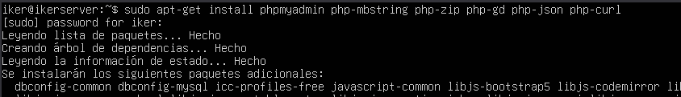
Añadimos contraseña para phpmyadmin
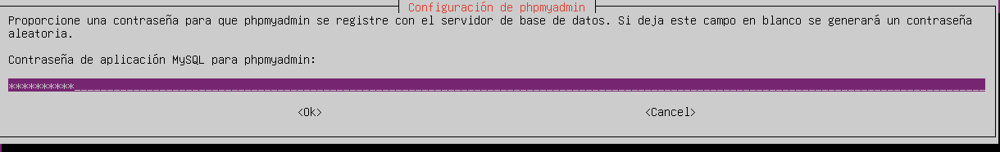
Crearemos un enlace simbolico para que nginx pueda acceder a phpMyAdmin
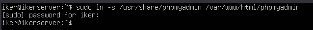
Ahora comprobamos que funcione.
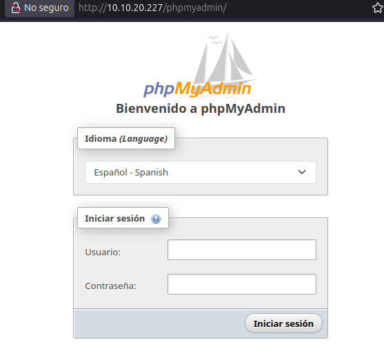
Permitir acceso por contraseña del root de MySQL
Ahora entraremos a MySQL y añadiremos lo siguiente para permitir acceso por contraseña.
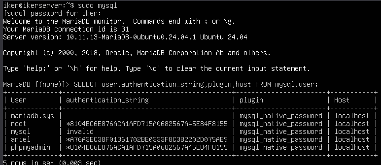
Configuración de acceso por contraseña para un usuario dedicado de MySQL
Creamos un usuario nuevo.
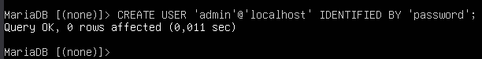
Le damos privilegios y aplicamos cambios.
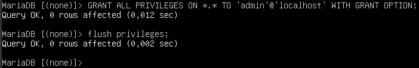
Y ahora comprobamos.
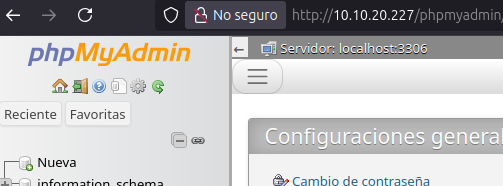
Asegura la instancia de PHPMyAdmin
Creamos un fichero .htpasswd para almacenar credenciales usuarios y contraseñas.
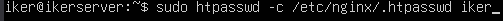
Ahora lo añadimos a la configuración.
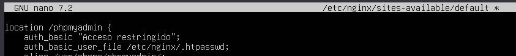
Ahora volvemos a acceder a la página y nos pedirá contraseña.
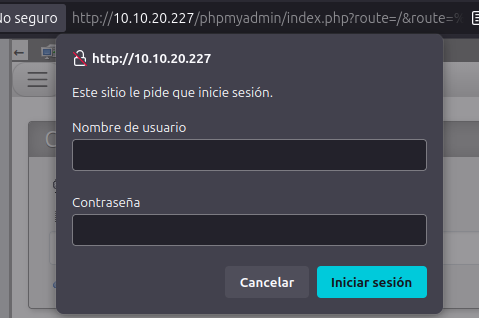